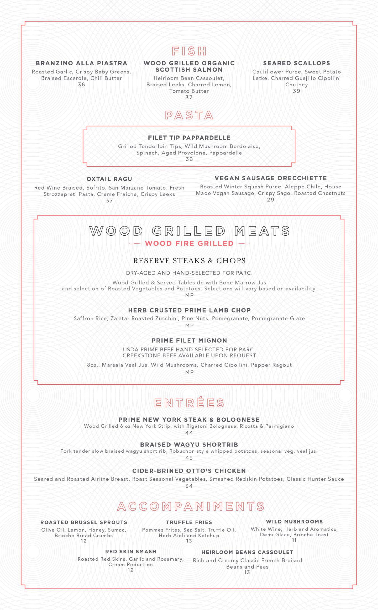
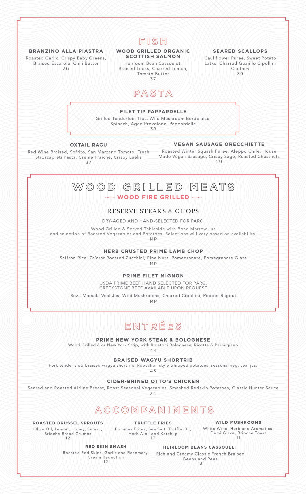

Welcome to Parc Dinner Menu!
Featuring “redefined Detroit cuisine,” our menu is inspired by the
influences and
flavors of Detroit’s vast
cultural communities, both past and present.
Featuring “redefined Detroit cuisine,” our menu is inspired by the
influences and
flavors of Detroit’s vast
cultural communities, both past and present.
 
